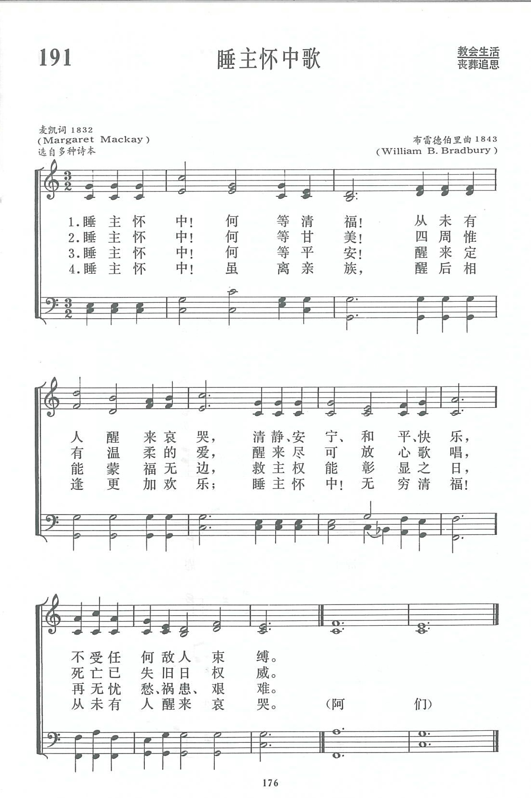

|
|
第191首《睡主懷中歌》 |
|
1 Asleep in Jesus! blessed sleep, 2 Asleep in Jesus! O how sweet 3 Asleep in Jesus! peaceful rest, 4 Asleep in Jesus! O for me |
1.睡主懷中！何等清福！從未有人醒來哀哭， |
|
https://www.zanmeishige.com/tab/13864.html?songbook=1&index=191

|
|
|
|
|


https://youtu.be/ufDSsDqfpZ0 -
Asleep In Jesus! Blessed Sleep - Song Lyrics with Orchestral backing music.
https://youtu.be/jiNp5arH2Rs
| Text: | Asleep in Jesus! Blessed Sleep |
| Author: | Margaret Mackay, 1802-87 |
| Tune: | REST |
| Composer: | William B. Bradbury, 1816-68 |
| Short Name: | Margaret Mackay |
| Full Name: | Mackay, Margaret, 1802-1887 |
| Birth Year: | 1802 |
| Death Year: | 1887 |
Mackay, Margaret, was born in 1802, and the only daughter of Captain Robert Mackay, of Hedgefield, Inverness. She was married in 1820 to Major William Mackay, of the 68th Light Infantry (afterwards Lt. Colonel) a distinguished officer who died in 1845. Mrs. Mackay died at Cheltenham, Jan. 5, 1887. In addition to various prose works Mrs. Mackay published Thoughts Redeemed; or Lays of Leisure Hours, 1854, which contained 72 original hymns and poems. [Rev. James Mearns, M.A.]
-- John Julian, Dictionary of Hymnology (1907)
Notes
Asleep in Jesus! blessed sleep. Margaret Mackay. [Burial of the Dead.] Appeared first in The Amethyst; or Christian's Annual for 1832 (Edin. W. Oliphant), edited by R. Huie, M.D., and R. K. Greville, LL.D., p. 258, in 6 stanzas of 4 lines. It is thus introduced:—
"Sleeping in Jesus. By Mrs. Mackay, of Hedgefield. This simple but expressive sentence is inscribed on a tombstone in a rural burying ground in Devonshire, and gave rise to the following verses."
In reprinting it at p. 1 of her Thoughts Redeemed, 1854, Mrs. Mackay says the burying ground meant is that of Pennycross Chapel. She adds:—
"Distant only a few miles from a bustling and crowded seaport town, reached through a succession of those lovely green lanes for which Devonshire is so remarkable, the quiet aspect of Pennycross comes soothingly over the mind. “Sleeping in Jesus' seems in keeping with all around."
From the Amethyst it has passed into numerous hymnals in Great Britain and America, and was recently included, in full, and unaltered, as No. 241 in the Scottish Presbyterian Hymnal, 1876, and as No. 31 in the Free Church Hymn Book, 1882. In Thring's Collection 1882, No. 557, we have a cento composed of the first stanza of Mrs. Mackay's hymn, and stanzas ii.-vi. from Thring's "Asleep in Jesus, wondrous sleep," as noted below, but somewhat altered. This cento is unknown beyond Thring's Collection Rev. James Mearns, M.A.]
-- John Julian, Dictionary of Hymnology (1907)
=====================
Asleep in Jesus, blessed sleep , p. 87, i. The form of this hymn given in the 1903 edition of Church Hymns , is stanza i., line 1 by Mrs. Mackay and the rest by G. Thring, the same being a revision of his "Asleep in Jesus, wondrous sleep," noted at p. 87, i. This revision was made in October 1896, and published by Novello & Co. with the tune “St. Gabriel," by H. H. Pierson, which was written for Thring's original version, in 1872.
--John Julian, Dictionary of Hymnology, Appendix, Part II (1907)
Tune Information
| Title: | REST (Bradbury) |
| Composer: | William B. Bradbury (1843) |
| Meter: | 8.8.8.8 |
| Incipit: | 55515 53244 42767 |
| Key: | D Major |
| Copyright: | Public Domain |
| Short Name: | William B. Bradbury |
| Full Name: | Bradbury, William B. (William Batchelder), 1816-1868 |
| Birth Year: | 1816 |
| Death Year: | 1868 |
William Bachelder Bradbury USA 1816-1868.

Born at York, ME, he was raised on his father's farm, with rainy days spent in a shoe-shop, the custom in those days. He loved music and spent spare hours practicing any music he could find. In 1830 the family moved to Boston, where he first saw and heard an organ and piano, and other instruments. He became an organist at 15. He attended Dr. Lowell Mason's singing classes, and later sang in the Bowdoin Street church choir. Dr. Mason became a good friend. He made $100/yr playing the organ, and was still in Dr. Mason's choir. Dr. Mason gave him a chance to teach singing in Machias, ME, which he accepted. He returned to Boston the following year to marry Adra Esther Fessenden in 1838, then relocated to St. Johns, New Bruswick. Where his efforts were not much appreciated, so he returned to Boston. He was offered charge of music and organ at the First Baptist Church of Brooklyn. That led to similar work at the Baptist Tabernacle, New York City, where he also started a singing class. That started singing schools in various parts of the city, and eventually resulted in music festivals, held at the Broadway Tabernacle, a prominent city event. He conducted a 1000 children choir there, which resulted in music being taught as regular study in public schools of the city. He began writing music and publishing it. In 1847 he went with his wife to Europe to study with some of the music masters in London and also Germany. He attended Mendelssohn funeral while there. He went to Switzerland before returning to the states, and upon returning, commenced teaching, conducting conventions, composing, and editing music books. In 1851, with his brother, Edward, he began manufacturring Bradbury pianos, which became popular. Also, he had a small office in one of his warehouses in New York and often went there to spend time in private devotions. As a professor, he edited 59 books of sacred and secular music, much of which he wrote. He attended the Presbyterian church in Bloomfield, NJ, for many years later in life. He contracted tuberculosis the last two years of his life.
John Perry
第191首 睡主怀中歌 Asleep in Jesus,blessed Sleep _M.Mackay
经文：“但基督已经从死里复活，成为睡了之人初熟的果子”(林前l5：20)。
这首诗是英国长老会女信徒麦凯夫人(M.Mackay，182O一1887）写的。有一次，麦凯夫人同一位朋友驾车到德律郡野外去旅游，路过郊区一座教堂，便进去参观。教堂后面有墓园，这在英美国家比较常见。该堂建成不久，墓园还未修成为花园的样子，可是打扫得却很干净。麦凯夫人信步走到一个墓前，墓碑上刻着“在主里睡了的人”几个大字。
基督徒对死亡的观念和如此幽静的环境，促使了麦凯夫人写成这首《睡主怀中歌》，原题为《埋葬死者》。
曲谱调名叫《安息(REST)》，是布雷德伯里(事略参阅第靠9首)所谱。其旋律、和声构成无比宁静的气氛，在丧礼中给人莫大的安慰。
https://www.xueshengshi.com/?p=6517